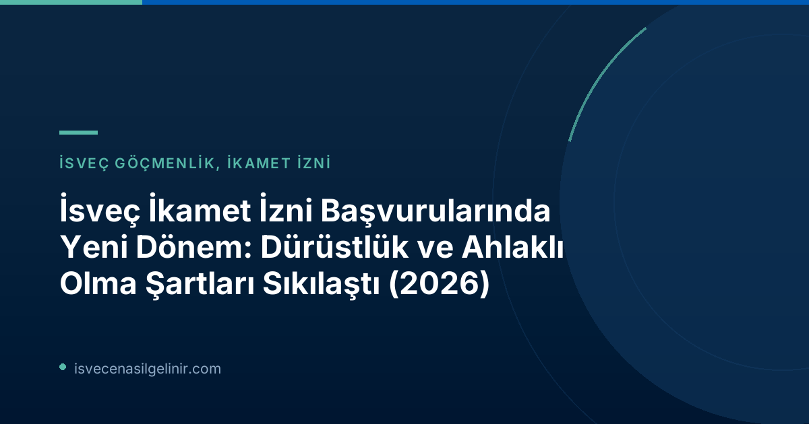

13 Temmuz 2026 tarihi itibarıyla İsveç Göçmenlik Ofisi (Migrationsverket), ikamet izni başvurularında "vandel" olarak bilinen dürüstlük, ahlaklı olma ve kurallara uyum şartlarını önemli ölçüde sıkılaştırdığını duyurdu. Bu yeni düzenlemeler, sadece suç teşkil eden fiilleri değil, aynı zamanda toplumun genel kurallarına ve beklentilerine aykırı görülen davranışları da kapsayarak, ikamet izni süreçlerinde daha detaylı bir değerlendirme döneminin kapılarını aralıyor.
İsveç'e yerleşmeyi düşünen herkes için büyük önem taşıyan bu değişiklikler hakkında bilmeniz gereken her şeyi bu kapsamlı rehberde bulabilirsiniz. İsveç'te sadece ikamet izni süreçleri değil, aynı zamanda vatandaşlık başvuru süreçleri de büyük bir dikkatle yürütülmektedir. Bu gelişmeler doğrultusunda, İsveç'e entegrasyonun önemli bir parçası olan İsveç Vatandaşlık Sınavı hakkında güncel bilgilere ulaşmak, adaptasyon sürecinizi kolaylaştıracaktır.
"Vandel" Nedir ve Neden Şimdi Daha Önemli?
"Vandel" Tanımı
Vandel (Türkçe: "Ahlaklı Olma", "Dürüstlük", "Kurallara Uyum"), bir kişinin toplumsal kurallara ve yasalara karşı sergilediği davranış bütününü ifade eder. Bu kavram, yalnızca ceza gerektiren suçları değil, aynı zamanda düzensiz yaşam biçimi, devlete karşı yükümlülükleri yerine getirmeme veya sahtekarlıkla geçimini sağlama gibi durumları da kapsar. Migrationsverket'in ifadesiyle, "Vandel, mutlaka suç olmayan, ancak toplumun korumaya çalıştığı kuralları bozan eylemler anlamına gelir."
Daha önce, ikamet izni başvurularında genellikle kişinin İsveç'te herhangi bir suça karışıp karışmadığı kontrol ediliyordu. Ancak yeni düzenlemelerle birlikte, Migrationsverket artık ikamet izni başvurusunda bulunan kişinin geniş anlamda "dürüstlük ve kurallara uyum" durumunu da detaylı bir şekilde inceleyebilecek. Bu değişiklik, İsveç toplumuna entegrasyonun sadece yasalara değil, aynı zamanda toplumsal normlara ve sorumluluklara uygunlukla da değerlendirileceğini gösteriyor.
Yeni Kurallar Kapsamında Migrationsverket'in Artan Yetkileri
13 Temmuz 2026 tarihinden itibaren geçerli olan yeni Yabancılar Yasası (Utlänningslagen) değişiklikleri, Migrationsverket'e önemli ölçüde daha geniş yetkiler tanımaktadır:
- Başvuru Reddi: Kurum, başvuru sahibinin "dürüstlük eksikliği" tespit etmesi durumunda ikamet izni başvurusunu reddedebilir.
- İkamet İzinin İptali: Mevcut bir ikamet izninin, sonradan ortaya çıkan veya tespit edilen "dürüstlük eksikliği" nedeniyle iptali söz konusu olabilecektir.
- Suç Dışı Davranışların İncelenmesi: Migrationsverket, kişinin henüz bir suça karışmamış olsa bile, tekrarlayan kural ihlalleri, yanlış bilgi verme, sahtekarlıkla geçimini sağlama veya organize suç ağlarıyla ilişkili olma gibi durumlarını inceleyerek değerlendirmesine dahil edecektir.
Bu yetkilerin kullanılması, Oskar Ekblad'ın belirttiği gibi, "Kötüye kullanımı tespit etme ve önüne geçme çabalarının" bir parçasıdır. Amaç, İsveç toplumunda yaşayan herkesin belirlenen kurallara ve normlara uyum sağlamasını güvence altına almaktır.
Migrationsverket "Vandel" Değerlendirmesini Nasıl Yapacak?
"Vandel" değerlendirmesi, her başvuru için bireysel ve kapsamlı bir şekilde yapılacaktır. Migrationsverket, başvuruyu değerlendirirken şu adımları izleyecektir:
- Kapsamlı Değerlendirme: Başvuru sahibinin kural ihlallerine ve dürüstlük durumuna ilişkin bütüncül bir değerlendirme yapılacaktır.
- Diğer Kurumlardan Veri Toplama: Bu değerlendirmeye esas olmak üzere, Migrationsverket diğer kamu kurumlarından (örneğin Vergi Dairesi, Sosyal Sigortalar Kurumu, İcra Dairesi gibi) bilgi talep edebilir. Bu bilgiler arasında ödeme emirleri (betalningsförelägganden), geçim desteği (försörjningsstöd), sosyal sigortalar ve diğer kamusal ödenekler için verdiği bilgiler yer alabilir.
- Davranışsal Analiz: Önemsiz tekil olaylar genellikle ret nedeni olmayacakken, tekrarlayan ve süreklilik arz eden olumsuz davranışlar değerlendirmede önemli bir rol oynayacaktır.
- Hukuki Prensiplere Uygunluk: İkamet izninin reddi veya iptali kararları her zaman idari hukuk ilkeleri olan yasallık, nesnellik ve tarafsızlık prensiplerine uygun, iyi gerekçelendirilmiş olmalıdır.
- Orantılılık İlkesi: Kişinin ikamet izni gerekçeleri ile toplumun dürüst ve kurallara uyan vatandaşlara olan ilgisi arasında orantılı bir değerlendirme yapılacaktır. Bireyin İsveç'te kalma hakları, toplumun beklentileri ve kamu düzeni arasındaki denge gözetilerek karar verilecektir.
Kimler Yeni "Vandel" Şartlarından Etkilenecek?
Yeni ve sıkılaştırılmış "vandel" şartları, tüm ikamet izni başvurularını aynı şekilde etkilemeyecektir. Bu durum, başvuru tipine ve temelini oluşturan hukuki çerçeveye göre farklılık göstermektedir:
| İkamet İzni Tipi | Yeni "Vandel" Şartlarından Etkilenme | Açıklama |
|---|---|---|
| AB Hukuku dışına dayanan ikamet izinleri (Çalışma, Aile Birleşimi vb.) | Evet, doğrudan etkilenir. | Bu kategorideki ikamet izinleri, sıkılaştırılan "vandel" kurallarına tabi olacaktır. Migrationsverket, başvuranın dürüstlük ve kurallara uyum durumunu daha detaylı inceleyecektir. |
| Uluslararası Koruma (Sığınma) Başvuruları | Hayır, etkilenmez. | Sığınma başvuruları, uluslararası koruma hukuku çerçevesinde değerlendirildiği için yeni "vandel" kurallarından muaf tutulmuştur. |
| AB Hukukuna dayanan ikamet izinleri (Çalışma, Öğrenci, Aile Birleşimi vb.) | Hayır, etkilenmez. | AB direktiflerine dayanan ikamet izinleri (örneğin AB Mavi Kart, AB aile birleşimi hakları gibi), bu yeni "vandel" sıkılaştırmalarından etkilenmeyecektir. |
Bu ayrım, AB hukuku kapsamında belirli haklara sahip olan bireylerin korunmasını sağlarken, diğer ikamet izni kategorilerinde İsveç'in kendi iç göç politikalarını daha sıkı bir şekilde uygulama arzusunu yansıtmaktadır.
İsveç İkamet İzni Başvurularında Dikkat Edilmesi Gerekenler
Yeni "vandel" şartları ışığında, İsveç'te ikamet izni başvurusunda bulunmayı düşünen veya mevcut iznini yenileyecek kişilerin aşağıdaki hususlara özellikle dikkat etmeleri gerekmektedir:
- Dürüst ve Şeffaf Olma: Başvuru sürecinde Migrationsverket'e sunulan tüm bilgilerin eksiksiz, doğru ve gerçeği yansıttığından emin olun. Hatalı veya yanıltıcı bilgi vermek, başvurunuzun reddedilmesine veya mevcut izninizin iptaline yol açabilir.
- Geçmiş Finansal ve Sosyal Destek Kayıtları: Daha önce İsveç'te herhangi bir kamusal ödenek (geçim desteği, sosyal sigorta vb.) alıp almadığınız, aldırdığınızda doğru bilgi verip vermediğiniz veya ödeme emirleri (icra takipleri) gibi finansal durumlarınız incelenebilir. Tüm geçmiş yükümlülüklerinizi yerine getirmiş olmanız büyük önem taşır.
- Davranışsal Bütünlük: Toplumun genel kurallarına ve yasalarına aykırı herhangi bir davranıştan kaçının. Küçük gibi görünen kural ihlalleri bile (örneğin, tekrarlayan trafik ihlalleri, vergi borçları gibi), Migrationsverket'in değerlendirmesinde olumsuz bir faktör olarak ele alınabilir.
- Organize Suç ve İlişkiler: Herhangi bir yasa dışı aktiviteye veya organize suç ağıyla ilişkiye karışmamaya özen gösterin. Bu tür ilişkiler, ikamet izni başvurunuz üzerinde çok ciddi olumsuz sonuçlar doğuracaktır.
Bu yeni düzenlemeler, İsveç'in göçmenlik politikasında daha seçici ve entegrasyonu ön planda tutan bir yaklaşım sergilediğini göstermektedir. Başvuru sahiplerinin, İsveç toplumunun bir parçası olma sorumluluğunu tam olarak anlamaları ve buna uygun davranmaları beklenmektedir.
İsveç Vatandaşlık Testi ve Süreciyle İlişkili Durum
Her ne kadar bu duyuru doğrudan ikamet izinlerini ilgilendirse de, İsveç'teki yasalara, kurallara ve toplumsal normlara uyum, uzun vadede vatandaşlık başvuruları için de kritik öneme sahiptir. "Vandel" kavramı, vatandaşlık başvurularında da kişinin devlete karşı sorumluluklarını yerine getirip getirmediğini değerlendirmede göz önünde bulundurulur. Bu nedenle, ikamet izni sürecindeki bu sıkılaşan denetim, gelecektişe vatandaşlık hedefleriniz için de bir zemin oluşturmaktadır. İsveç vatandaşlığına giden yolda karşılaşacağınız sverigemedborgarskapsprov.com gibi önemli aşamalar hakkında detaylı bilgi edinmek için ilgili kaynakları ziyaret edebilirsiniz.
Sıkça Sorulan Sorular (SSS)
S: Yeni kurallar ne zaman yürürlüğe girdi?
C: Yeni ve sıkılaştırılmış "vandel" şartları 13 Temmuz 2026 tarihinden itibaren geçerlidir.
S: Sadece suç işleyenler mi bu kurallardan etkilenecek?
C: Hayır. Kurallar sadece suç teşkil eden fiilleri değil, aynı zamanda toplumun genel kurallarına aykırı, dürüstlük veya ahlaklı olma prensiplerine uymayan davranışları da kapsar. Örnek olarak, yanlış bilgi verme, sahtekarlıkla geçinme veya tekrarlayan kural ihlalleri de değerlendirmeye alınacaktır.
S: Küçük bir kural ihlali ikamet iznimi etkiler mi?
C: Duyuruda belirtildiği üzere, tekil ve küçük çaplı bir kural ihlali genellikle ret nedeni değildir. Ancak tekrarlanan ve süreklilik arz eden olumsuz davranışlar, değerlendirmede önemli bir rol oynayabilir.
S: AB vatandaşıyım, ben de etkileniyor muyum?
C: AB Hukuku çerçevesinde ikamet izni başvurusunda bulunan veya mevcut ikamet izni olan AB vatandaşları bu yeni ve sıkılaştırılmış "vandel" kurallarından etkilenmeyecektir. Bu kurallar daha çok AB hukuku dışına dayanan ikamet izinleri için geçerlidir.
Sonuç ve Tavsiyeler
İsveç Göçmenlik Ofisi'nin "vandel" şartlarını sıkılaştırma kararı, ülkenin göç politikasında önemli bir değişimin sinyalini vermektedir. İsveç'in sadece kapılarını açtığı değil, aynı zamanda ülkeye entegre olacak, yasalara ve toplumsal normlara saygılı bireyler aradığı mesajı net bir şekilde verilmiştir. İsveç'te yaşamak veya vatandaşlık elde etmek isteyen herkesin bu yeni düzenlemeleri çok ciddiye alması ve kendi durumlarını bu kapsamda değerlendirmesi büyük önem taşımaktadır. Herhangi bir belirsizlik durumunda uzman bir göçmenlik danışmanından destek almak, sürecinizi sağlıklı bir şekilde yönetmenize yardımcı olacaktır.
---Referanslar:
İsveç'e Yolculuğunuz İçin Profesyonel Destek
İsveç'e taşınma veya ikamet izni başvurularınızda karmaşık süreçlerle tek başınıza uğraşmak zorunda değilsiniz. Uzman danışmanlarımızla iletişime geçin, haklarınızı ve yükümlülüklerinizi tam olarak anlayarak başvurunuzu sorunsuz bir şekilde tamamlayın.